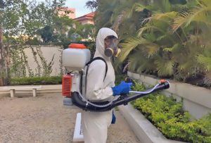

Somos a Insetcarioca
Há mais de 10 anos no mercado, oferecemos serviços de dedetização em todas as regiões do RJ e Grande Rio.
Garantia por escrito de eficiência em todas as nossas obras. É isso que você receberá ao se tornar nosso cliente.

A Insetcarioca
A Insetcarioca é reconhecida em todo o Rio de Janeiro pela eficácia de seus serviços de Controle de pragas e pela utilização de produtos não agressivos ao meio ambiente.
Somos especializados em controle de pragas e vetores em empresas de todos os portes, casas, apartamentos e condomínios.
Contamos com uma equipe de profissionais altamente qualificados, alta tecnologia e bom custo-benefício para garantir máxima qualidade em atender nossos clientes no Rio de Janeiro.
Nós trabalhamos com produtos que possuem baixa ação tóxica e não impactam o Meio Ambiente, sendo que alguns deles não têm cheiro e não há a necessidade de se ausentar do ambiente, nem de retirada de objetos dos lugares. Só utilizamos produtos recomendados pelo INEA.
Nossos Principais Serviços
Desinsetização
Através de produtos sem cheiro e à base de gel, a Insetcarioca desenvolveu um sistema onde não é mais necessário o deslocamento de móveis, pessoas, animais domésticos e interrupção das atividades. Dedetização não é mais sinônimo de transtorno. Sua aplicação necessita apenas de responsável para acompanhar a execução do serviço.
Desratização
Os ratos são transmissores de várias doenças contagiosas como a leptospirose, peste bubônica, entre outras. A Insetcarioca desenvolveu um moderno tratamento contra os ratos com uso de estação permanente de iscagem para monitorar, controlar e eliminar a presença de ratos no ambiente sem causar danos à saúde de pessoas e animais domésticos.
Descupinização
A Insetcarioca possui um sistema de controle de cupins que causa o extermínio em cadeia de toda a colônia com uso de produtos de última geração. A vantagem desse moderno tratamento é que ele possui baixo odor, não tem repelência e ação rápida e eficaz. Outra técnica é a pulverização de cupinicida, onde não haja necessidade de perfurações.
Nossa Missão
Atender com eficiência, segurança e pontualidade a cada um de nossos clientes, superando assim as suas expectativas em:
- Controle Ambiental de pragas Urbanas;
- Higienização e limpeza de reservatórios de água potável;
- Paisagismo e jardinagem com plantio e poda de árvores nas áreas urbanas e rurais;
- Serviços sempre com alta qualidade para maior satisfação dos nossos clientes;
- Especialização em controle de pragas e vetores em empresas de todos os portes, casas, condomínios e indústrias.
Nossa Visão
- Foco na qualidade ambiental e controle de pragas urbanas;
- Desenvolver métodos de controle com o mais baixo impacto ambiental;
- Relacionamento, qualidade e eficácia como lemas para uma prestação de serviço cada dia melhor;
- Entender com profundidade para atender as necessidades de cada cliente.
Credibilidade e Certificados de Garantia
- Garantimos a qualidade e eficiência de nossos serviços através de produtos de última geração;
- Especialização e treinamento contínuo do nosso quadro operacional;
- Oferecemos um Certificado de Qualidade Ambiental oficial;
- Controle e qualidade ambiental baseado em procedimentos internacionais visando a eficácia do controle de pragas urbanas;
- Preservação rigorosa do meio ambiente;
- Excelência na prestação de serviços ecologicamente corretos, fazendo da empresa uma das mais conceituadas no segmento.